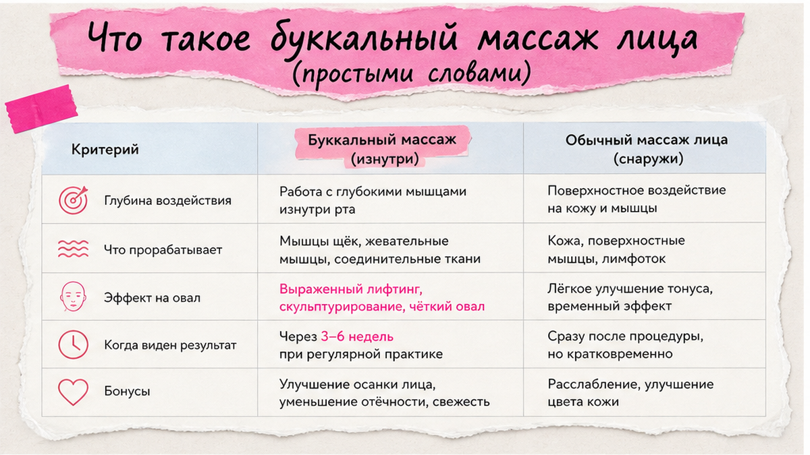
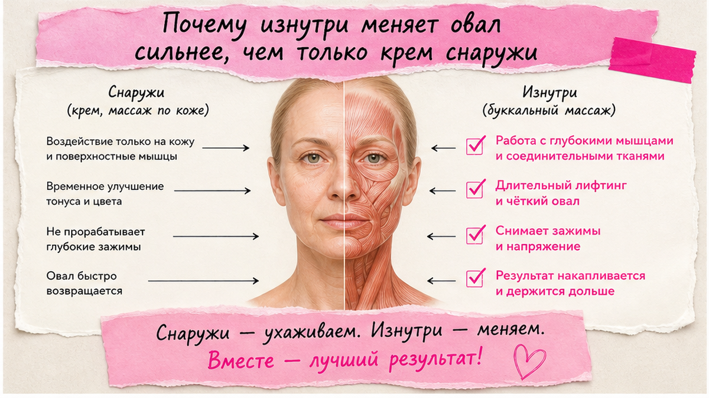
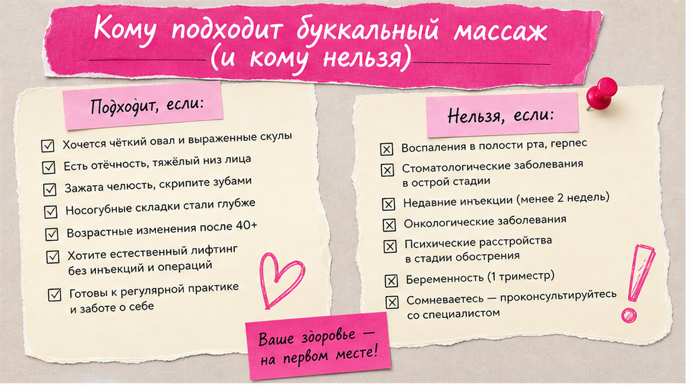

Буккальный массаж лица - это работа с мышцами через щёку изнутри рта: пальцы мягко давят на ткани с внутренней стороны, снаружи вторая рука поддерживает кожу. Дома безопасно только лёгкая техника без боли - 5-7 минут, чистые руки, без попыток повторить салонный «скульптурный» сеанс.
Буккальный массаж нужен не «ради модного слова», а чтобы разгрузить жевательные мышцы и глубокие зажимы, до которых снаружи не достать. Когда челюсть живёт в напряжении, страдает овал, появляются отёки и ощущение «тяжёлого» лица к вечеру. Мягкая работа изнутри - один из инструментов, не замена врачу при боли в суставе.
Разберём по-человечески: что такое буккальный массаж, кому он подходит, кому нельзя, и как сделать дома пошагово - без страшилок и без обещаний «новое лицо за один вечер».
Ко мне часто приходят после салона.
«Елена, после буккального массажа лица был wow-эффект. А через три дня всё вернулось».
Или наоборот:
«Мне делали изнутри так больно, что я больше не хочу».
Обе истории про одно и то же.
Буккальный массаж - не волшебная кнопка.
Это способ поговорить с мышцами, которые вы годами сжимали зубами, жевали на одной стороне или держали стресс в челюсти.
Если ждать только «подтяжку», разочарование приходит быстро.
Если смотреть на причину - тонус, отёк, привычка - картина становится честнее.

«Буккальный» - от латинского bucca, щека.
Мастер (или вы сами) заводит палец в полость рта и давит на внутреннюю стенку щеки.
Снаружи вторая рука держит кожу - чтобы движение было мягким и контролируемым.
Механизм. Снаружи мы привыкли гладить кожу и крем.
Но овал, «надутость» нижней трети и уставший вид часто связаны с глубокими мышцами - жевательными, подъязычной зоной, боковыми группами.
Они же участвуют, когда вы сжимаете зубы днём, не замечая этого.
Буккальный массаж лица как раз про доступ к этим слоям - не через укол, а через мягкое механическое воздействие.
❌ Что буккальный массаж НЕ делает:
✅ Что обычно даёт регулярная мягкая практика:
Если у вас уже есть асимметрия от жевания на одной стороне, буккальный массаж имеет смысл только симметрично и очень мягко - не «давить сильнее на слабую сторону».

Представьте, что лицо - это не только кожа, а «подушка» с мышечным каркасом.
Когда жевательные перегружены, каркас будто подталкивает щёку вниз и в сторону.
Крем снаружи увлажняет.
Но если каркас сжат, овал всё равно выглядит тяжелее.
Отёк. Лимфа - это внутренняя система, которая убирает лишнюю жидкость из тканей.
Зажатая челюсть и шея ухудшают отток.
К вечеру лицо «плывёт» - особенно в зоне под скулой и вдоль нижней челюсти.
Мягкий буккальный массаж + работа снаружи помогают тканям «размяться», но только если вы не добавляете силовой стресс.
Стресс в челюсти. Многие женщины 45+ обнаруживают, что сжимают зубы за рулём, в очереди, за ноутбуком.
Челюсть - самый «тихий» способ держать напряжение.
Изнутри это чувствуется как плотная полоска вдоль щеки.
Именно её мы мягко «раскладываем», а не выдавливаем.
Шея. Если параллельно у вас компьютерная шея, голова уезжает вперёд - и жевательные работают в перегрузке.
Буккальный массаж без осанки - как мыть окно, не закрыв кран: эффект есть, но временный.
💡 Салонный скульптурно буккальный массаж лица и домашняя мягкая техника - не одно и то же. Дома ваша задача - разгрузка, а не «лепка» до синяков.

Подходит, если вы узнаёте себя:
Отёк к вечеру. Утром лицо свежее, к ночи нижняя треть «тяжелеет».
Зажатая челюсть. Просыпаетесь с ощущением, что зубы «сцеплены».
После стресса. Лицо устало, хотя крем тот же.
Массаж снаружи «не берёт». Кожа ухожена, а овал визуально не меняется - часто дело в глубоком тонусе.
❌ Нельзя или только после врача:
Сделайте: при сомнении - стоматолог или челюстной специалист до первого сеанса. Не делайте: «терпеть боль - значит работает».
Перед курсом ухода полезно понять тип кожи - диагностика кожи за пару минут подскажет, какое масло или крем не будут провоцировать комедоны после массажа.
Техника буккального массажа лица дома начинается не с пальца во рту, а с гигиены.
Руки. Короткие ногти обязательно. Вымыть с мылом, сушить чистым полотенцем. Без лака на той руке, которая внутри.
Рот. Прополоскать водой. Снимите помаду. Брекеты и каппы - движения только там, где не цепляет конструкцию.
Зеркало. Смотрите прямо, не задирайте подбородок - иначе давите «криво».
Скольжение снаружи. Капля масла для лица или ваш обычный крем на щеку - чтобы внешняя рука не тянула кожу.
Время. 5-7 минут для домашнего протокола достаточно. Лучше 4 раза в неделю мягко, чем раз в месяц «до боли».
Миниплан подготовки.
За минуту до: вымыть руки, убрать украшения, крем на щёки снаружи.
Во время: дышите носом, не задерживайте дыхание от дискомфорта.
После: сплюнуть слюну, прополоскать рот, не есть 15 минут (не из-за «токсинов» - просто комфорт).
Ниже - домашний протокол «буккальный массаж лица самостоятельно», не копия салона.
Давление - лёгкое. Если хочется сильнее - уменьшите силу вдвое.
Сделайте: симметрично, одинаковое число повторов. Не делайте: второй сеанс в тот же день, если есть чувствительность.
Если хотите закрепить привычку - фото профиля в одном свете на 1-й и 14-й день. Без фильтров. Оценивайте не «скулу миллиметр вверх», а отёк и усталость.
| Ошибка | Что бывает | Как правильно |
|---|---|---|
| Давить сильно «как в салоне» | Синяки, боль, отёк хуже | Сила 3 из 10, боль = стоп |
| Только изнутри, без снаружи | Кожа тянется, раздражение | Всегда две руки: внутри + поддержка |
| Делать при герпесе «чуть-чуть» | Распространение, долгое восстановление | Пауза до полного заживления |
| Игнорировать сжатие зубов днём | К вечеру всё возвращается | Напоминание каждый час: «отпусти челюсть» |
| Ждать лифтинг за 1 сеанс | Разочарование, бросить | Курс 2-3 недели по 5 мин, 3-4 раза в неделю |
Миниплан на 14 дней.
Дни 1-14: протокол 5-7 мин, через день или 4 раза в неделю.
Каждый день: 3 раза заметить, не сжаты ли зубы.
Неделя 2: добавить 2 минуты мягкой шеи - не силовой гимнастики.
День 1 и 14: одно фото, один свет, без фильтра.
Буккальный массаж лица - про регулярную разгрузку, а не про «перелепить» лицо за вечер. Там, где нужен врач, массаж только мешает.
Обычный - снаружи, по коже и поверхностным мышцам. Буккальный - из полости рта, ближе к жевательным и глубоким слоям. Часто их сочетают: сначала мягко изнутри, потом лимфа снаружи.
Ежедневно и сильно - нет. 3-4 раза в неделю по 5-7 минут мягко - да, если нет боли и противопоказаний. Чувствительность на следующий день - пропустите.
Нет. Лёгкое давление, тянущее ощущение - допустимо. Острая боль, онемение, головокружение - прекратите, обратитесь к врачу.
Отёк может уйти на 1-3 дня, если причина - зажим. Без смены привычек (зубы, жевание, шея) овал вернётся к привычному. Домашняя поддержка продлевает ощущение лёгкости.
Для салонного скульптурного уровня - да, курс у мастера. Для домашней разгрузки достаточно пошагового протокола и здравого смысла. Не копируйте агрессивные ролики, где «давят до слёз».
Да, в разные дни или: утром йога, вечером мягкий буккальный - или наоборот. В один день не перегружайте челюсть.
Вы передавили или тянули кожу снаружи. 24-48 часов пауза, холод (не лёд напрямую), без повторного «выдавливания». Если не проходит - врач.
Только осторожно, избегая зацепов. Лучше спросить ортодонта. Часто достаточно работы снаружи до снятия системы.
Достоверность: материал основан на практике Елены Шимановской в фейс-йоге и массаже лица. Не медицинская рекомендация. При боли в суставе, онемении, воспалении слизистой - сначала очный осмотр врача.
🔥 Мой Telegram-канал «Silver Cream»
❓ Делали ли вы буккальный массаж в салоне или дома? Было ли больно или, наоборот, «легче дышать» челюстью? Сжимаете ли зубы днём, сами того не замечая? Напишите в комментариях ⤵️